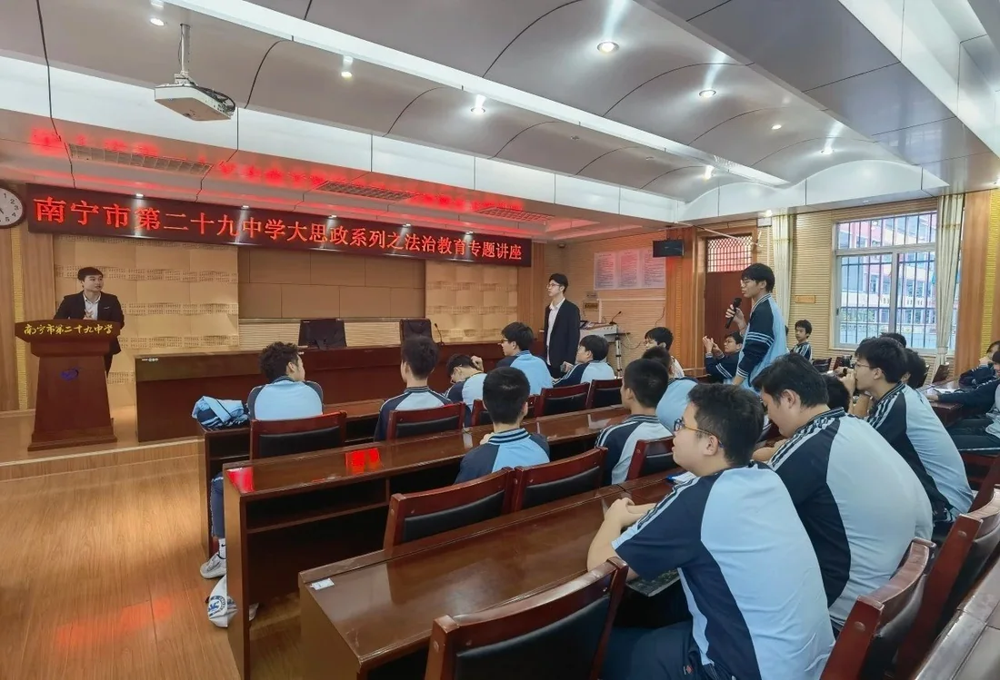
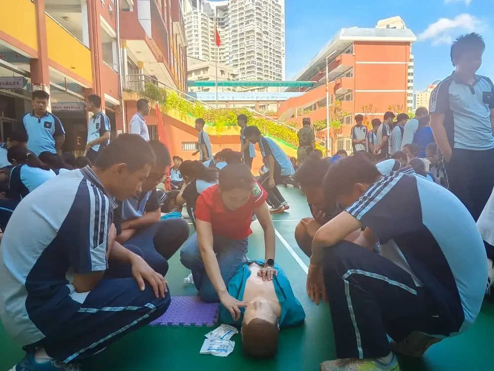
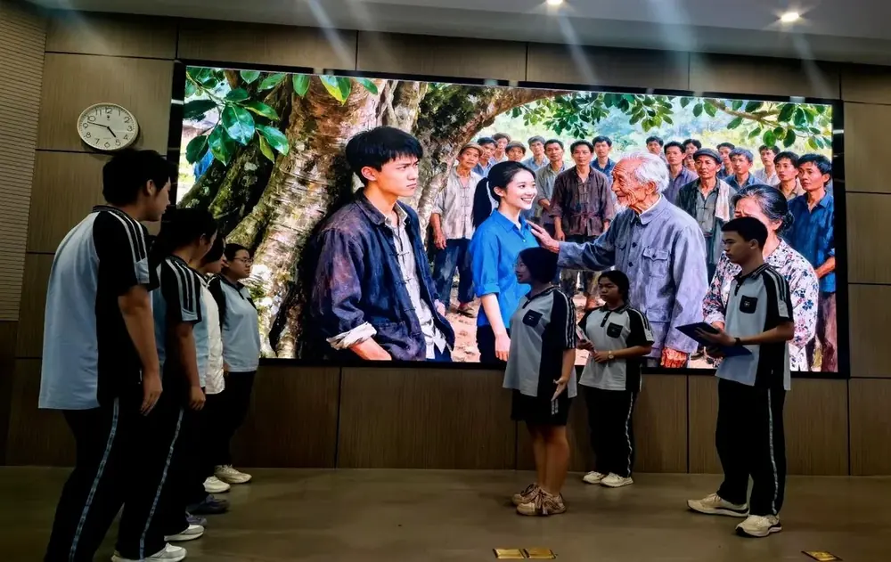
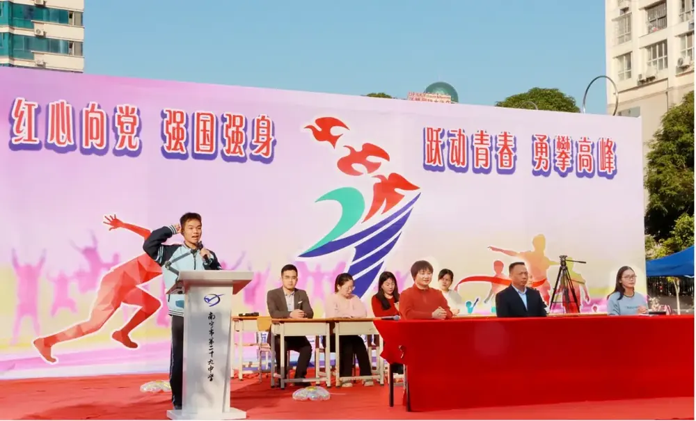

德育园地
先成人，再成才。我们希望在二十九中的三年或六年里，孩子学会对自己负责，也学会对他人温柔。
Moral education
德育，
藏在每天的小事里。
德育不是挂在墙上的口号。它是一次准时到校、一次主动让座、一次在别人需要时伸出的手。
学校以主题班会、社会实践、志愿服务与心理健康教育为载体，把价值观教育融入日常，让学生在真实情境中练习做一个负责任的人。
我们不以“听话”作为好学生的唯一标准，更看重孩子是否拥有判断力、同理心与行动的勇气。

育人路径
把德育，
拆解进日常。
不靠一次大型活动“突击育人”，而是把德育拆解进课程、活动、实践与日常协同。
课程育人
把德育目标融入学科教学与主题班会，用议题讨论代替单向说教。
活动育人
艺术节、运动会、读书节、成人礼。让学生在参与中体验规则、合作与责任。
实践育人
社区服务、研学实践、劳动基地。走出教室，看见真实的社会与他人的生活。
协同育人
家长学校、家访、家长开放日。家校之间保持坦诚、持续的沟通。
法治与安全
先学会
保护自己。
法治教育、急救培训、安全演练。比“知道”更重要的，是遇到事情时知道怎么做。


社会实践
走出校园，
也走进真实的生活。
志愿服务、影视教育、研学实践。把课堂里的道理，放到真实场景里走一遍。


学生社团
让热爱，
找到同伴。
社团由学生自主报名，教师指导，固定时间开展。这里没有“主科副科”，只有喜欢和更喜欢。
合唱团广西中学生合唱节一等奖
足球社班级联赛 · 校际交流
篮球社班级联赛 · 社团招新
科创社科技节 · 项目式学习
文创社校园文创 · 视觉设计
劳动实践社校园菜地 · 向日葵与蔬菜种植

仪式与日常
让平凡的日子，
有了刻度。
开学礼、成人礼、运动会、艺术节。仪式感不是形式主义，它让成长可以被回望，也让一个集体拥有共同的记忆。
台上发言的学生、台下鼓掌的同学、忙碌的老师和家长志愿者，一起构成了校园里最真实的画面。
查看活动报道一年里
那些被记住的
日子。
从三月的志愿服务，到十二月的艺术节。每一个节点，都是一次共同成长的邀请。
学雷锋志愿服务月
走进社区，从身边的小事做起。
读书节
共读一本书，办一场读书分享会。
心理健康活动月
认识情绪，学习求助，也学习照顾自己。
开学礼 · 教师节
新的开始，也向陪伴者表达感谢。
秋季运动会
在赛场上学习合作、规则与输赢。
科技节
从问题出发，动手做一次真实的探究。
校园文化艺术节
让每一个愿意站上台的人，都有一束光。
家校同心，才能走得更远。
家长学校、家访与开放日持续开展。欢迎家长与班主任保持联系，也欢迎为学校活动提供支持。